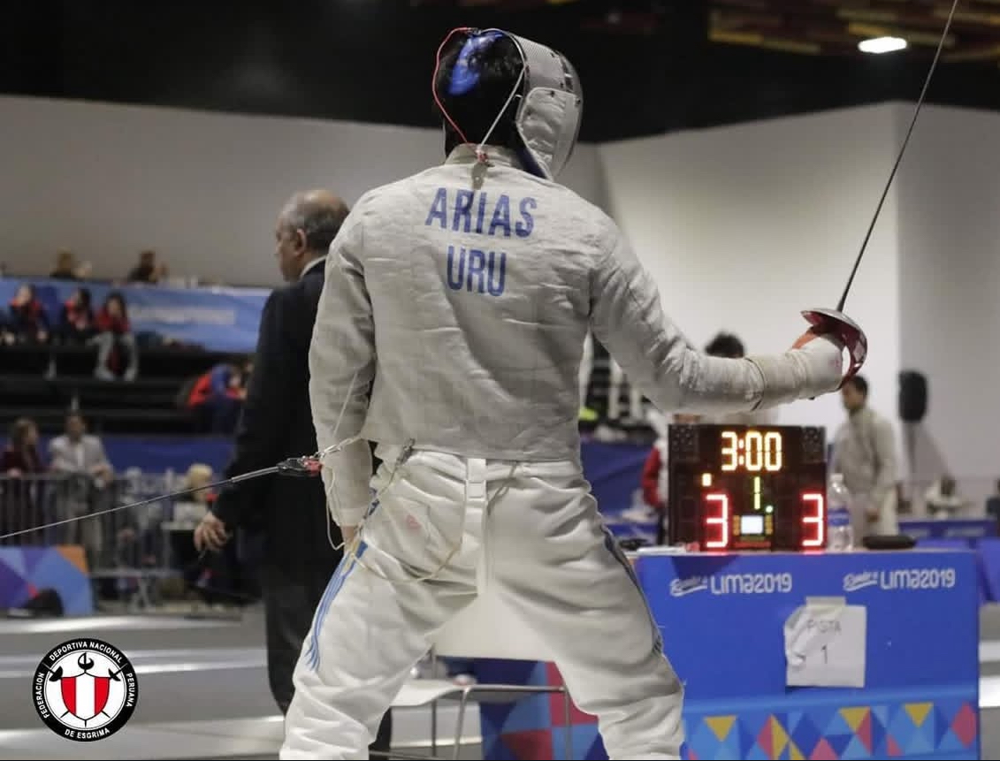
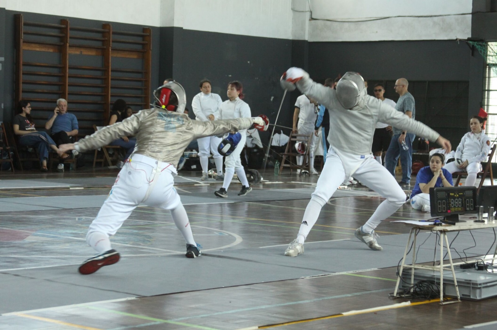

Juan Gaspar Arias
Pre-doctoral Fellow, Princeton University
Welcome! I am currently a pre-doctoral fellow at Princeton Univeristy's Research Program in Development Economics. I hold a B.A. and M.A. in Economics from the Universidad de la República (UdelaR), Uruguay. I also count with studies in Political Science from the same institution. Previously, I was a research assistant for the United Programs for Political Economy Research and the Economics Department at the UdelaR. My research interests are Political Economy and Development Economics.
You can find my cv here.
Contact Info:
Department of Economics, Princeton University
120 Julis Romo Rabinowitz, Princeton, NJ
Email Me at: ja7375@princeton.edu
Research
Intergenerational spillovers of Collective Wage Bargaining: a case study for Uruguay.
May 2025
Master's Thesis - Directed by Martín Leites and Joan Vila
The Effect of Teacher Abuse on Educational Outcomes: Evidence from Peru. Joint with Maria Micaela Sviatschi and Natalia Guerrero. In progress.
Teaching
The Economy of Uruguay - Facultad de Ciencias Económicas y de Administración - Universidad de la República. Fall 2023.
Personal
Outside of academia, I was a competitive fencer from 2016 until 2022. I represented Uruguay internationally at junior and senior levels. I've won (but also lost) tournaments at the national level. Nowadays I enjoy fencing only recreationally.

